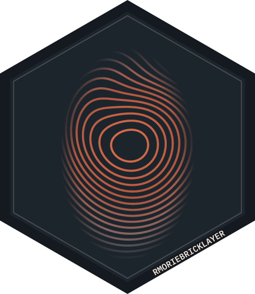

List, hide or withdraw your captures in archive.rmorie.com
Source:R/archive_rmorie.R
arcmine.Rdarcmine() lists the captures saved with your key, newest first,
the withdrawn ones included. arcvis() makes one of them private or
public. arcwd() withdraws one for good.
Arguments
- limit
The most captures to list (default 100, at most 1000).
- id
A capture id, as
arcmine()andarcfindgive it ("20260101120000-0123abcd").- to
"private"or"public".- confirm
Must be
TRUEforarcwd()to withdraw: a withdrawal cannot be undone, so the defaultFALSEstops with a message and changes nothing.
Value
arcmine(): a data frame of class rmbl_archive_find
with the columns of arcfind that the archive lists
(capture_id, captured, url, status,
mime, bytes, sha256, mode,
visibility) and withdrawn (logical).
arcvis(): a list with capture_id and visibility,
invisibly. arcwd(): a list with capture_id, url,
withdrawn (TRUE), was (its visibility when
withdrawn) and bytes_removed, invisibly.
Details
Only the account that saved a capture can change or withdraw it,
so all three need your key (see dlogin).
A private capture is listed and served to you alone; a public one to
anyone. A withdrawn capture leaves search, its page and every download,
for everyone including you, and cannot be brought back. Its record stays
as a mark that the id existed and was withdrawn by its saver. What
happens to the stored bytes depends on who could have seen them: a
capture that is private when withdrawn loses its search text, and its
bytes are deleted unless another capture holds the same bytes; a public
capture's bytes are kept, since others may have cited their SHA-256.
bytes_removed in the result says what was done.
Examples
if (FALSE) { # interactive()
mine <- arcmine()
mine
# hide the newest from everyone else, then show it again
arcvis(mine$capture_id[1], "private")
arcvis(mine$capture_id[1], "public")
# without confirm = TRUE nothing is withdrawn
try(arcwd(mine$capture_id[1]))
}